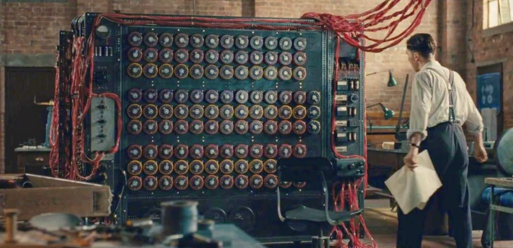
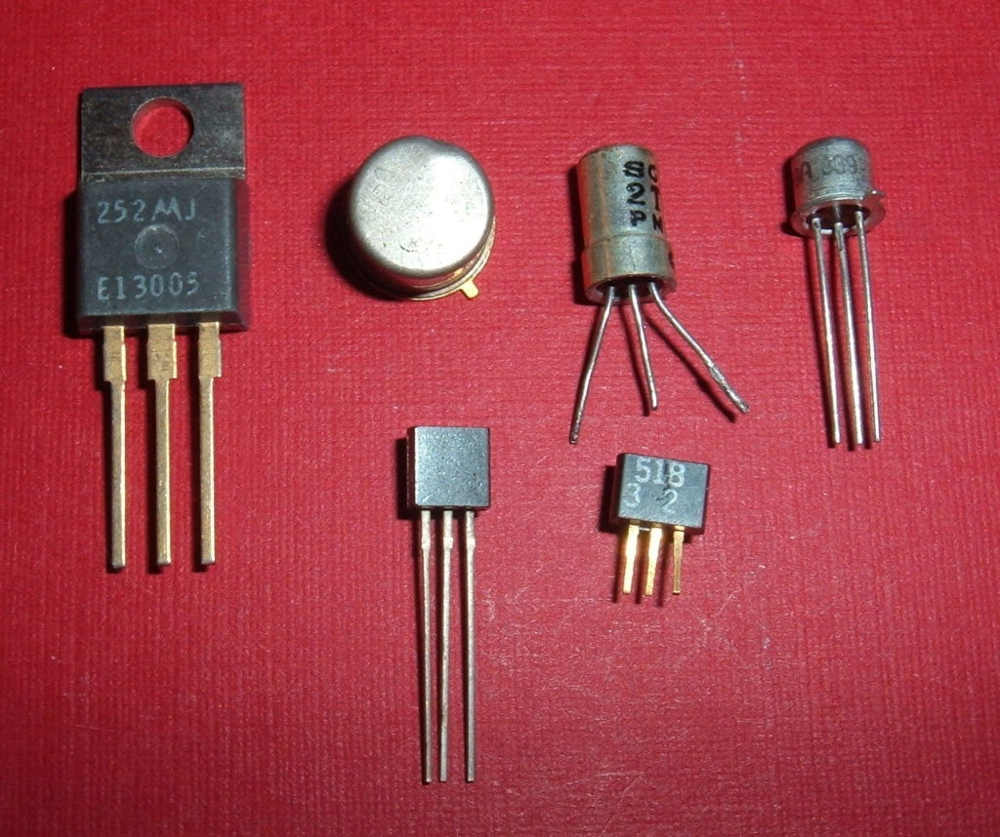

Chapitre 4 – Programmation en Python
Introduction à la programmation
1 Qu’est-ce que l’informatique ?
▶ Guide vidéo de la séance Astuce : ouvre le guide dans une fenêtre et cette page dans une autre pour suivre plus facilement.
Le mot informatique est composé des mots information et automatique. Brièvement, l’informatique est le traitement automatique de l’information.
Les deux machines les plus populaires qui traitent automatiquement l’information sont l’ordinateur et le téléphone portable.
Pour que la machine puisse traiter l’information, elle doit pouvoir communiquer avec un utilisateur, afin de répondre à ses besoins, ou avec une autre machine, afin de maintenir des services comme le réseau Internet. Pour cela, elle doit connaître certaines règles afin de traiter correctement les informations qu’elle reçoit.
2 Un peu d’histoire
Certains historiens font remonter le début de l’informatique à l’invention de la Pascaline, machine à calculer créée au XVIIᵉ siècle par Blaise Pascal. À l’aide d’un système de rouages, cette machine calcule automatiquement le résultat d’une opération : l’utilisateur saisit les nombres et la machine lui renvoie le résultat.
Additionner avec la réplique de la PascalineRegarder sur YouTube · nouvel ongletPendant la Seconde Guerre mondiale, la machine de Turing, destinée à décrypter les messages militaires nazis, est elle aussi une machine à rouages. Cependant, elle s’appuie sur une énergie dont Pascal ne disposait pas : l’électricité.

La création du transistor en 1947-1948 et le développement de l’électronique sont à l’origine de notre informatique moderne.

3 Le langage de programmation
Les règles, ou plutôt les instructions, que la machine doit connaître pour s’exécuter correctement sont écrites par un développeur informatique. Il détaille ce que la machine doit faire selon les informations qu’elle reçoit. C’est ce travail qui permet de concevoir les systèmes d’exploitation, les applications, les jeux vidéo et les logiciels.
Pour transmettre ses instructions à la machine, le développeur utilise un langage que tous deux comprennent : un langage de programmation. Il en existe un très grand nombre. Dans ce cours de Sciences numériques et technologie, nous allons travailler avec le langage Python.
Informatique = information + automatique. Un programme est une suite d’instructions écrites dans un langage de programmation pour qu’une machine traite de l’information.